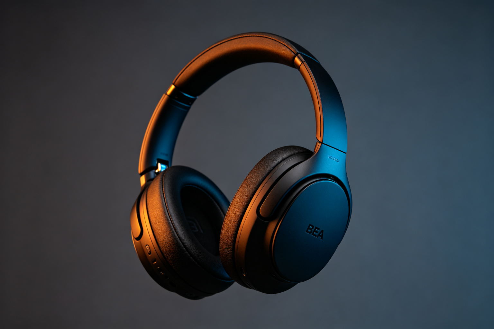

索尼 WH-1000XM5 耳机 · BEA 深度分析
分析日期：2026-09-13 ｜ 品类：手持消费电子/音频设备 ｜ 范式：冷峻克制 ｜ W(T)=0.60 ｜ BEA 评分：84/100
一、情绪基调
索尼 WH-1000XM5 给人的第一感受是专业、冷静、克制。它不像 Beats 那样张扬，也不像 AirPods Max 那样圆润亲和，而是以一种"工具感"的理性美学呈现。整体气质接近一个精密仪器——你知道它是用来干活的，而且干得很漂亮。
主导范式：冷峻克制（亲 38 : 危 62） - 第一情绪：理性、专业、可信赖 - 次级情绪：精密、高级、不张扬 - 审美窗口位置：偏右但未越界，适合有一定审美经验的用户
二、双极构成拆解
亲极元素（约 38%）
| 维度 | 元素 | 极性强度 | 作用 |
|---|---|---|---|
| 形状 | 耳罩整体圆润、头梁弧线流畅 | P3 | 保证佩戴舒适感，避免攻击性 |
| 质感 | 耳垫柔软亲肤、头梁内衬温和 | P4 | 触觉层的亲和，长期佩戴不疲劳 |
| 色彩 | 黑色/铂金银双色，低饱和 | P2 | 不刺眼，百搭，不过度张扬 |
| 细节 | 按键有明确反馈、接口规整 | P3 | 交互层的可控感和安全感 |
危极元素（约 62%）
| 维度 | 元素 | 极性强度 | 作用 |
|---|---|---|---|
| 形状 | 耳罩平面化设计、边缘锐利切角 | T6 | 制造精密感、工具感 |
| 质感 | 外壳磨砂硬塑料、金属铰链 | T5 | 冷硬、专业、不廉价 |
| 色彩 | 大面积纯黑、强明暗对比 | T6 | 冷峻、专业、有力量 |
| 细节 | 转轴机械结构外露、按键棱角分明 | T7 | 精密仪器感，技术崇拜 |
| 品牌 | Sony logo 克制、不喧宾夺主 | T4 | 专业品牌的自信，不靠 logo 撑场面 |
主辅比与层级策略
- 主辅比：危 62 : 亲 38，危极主导但亲极足够缓冲
- 层级策略：同向叠加（强化型）——宏观冷峻（整体黑色、平面化）＋微观冷峻（锐利切角、机械结构），层层加码制造专业感
- 跨模态一致性：视觉冷峻（黑色硬塑料）＋听觉冷峻（降噪后的寂静）＋触觉冷峻（磨砂硬壳），三通道协同，强化"专业工具"的整体感受
三、BEA 定位
张力 × 秩序象限
高张力 × 高秩序 = 美感黄金区
- 张力来源：大面积黑色、锐利切角、机械结构、强对比
- 秩序来源：对称设计、规整比例、清晰层级、一致的材质语言
- 评价：张力被秩序牢牢控制，没有滑向失控焦虑区，是冷峻克制范式的标准范本
范式定位
柔 ←————————————————————————————————→ 锐
治愈(0.10) 亲和(0.20) 均衡(0.40) 崇高(0.55) 【冷峻(0.62)】 先锋(0.70) |越阈
W(T)=0.60，精准落在冷峻克制范式的核心区间。这不是偶然，而是索尼音频产品线一贯的设计语言——从 Walkman 到 XM 系列，始终保持"专业工具"的冷峻美学。
三级阈值检查
- 本能安全阈：✅ 通过。耳罩圆润无锋利边缘，佩戴无压点，重量分布合理
- 认知处理阈：✅ 通过。虽然元素偏冷峻，但秩序清晰，用户能快速理解产品结构和交互逻辑
- 文化接受阈：⚠️ 注意。在亚洲市场，纯黑冷峻的设计可能被部分用户认为"太严肃""不够亲和"；在欧美市场接受度更高。索尼通过提供铂金银色版本来缓解这一问题
四、BEA 评分卡
| 维度 | 得分 | 评价 |
|---|---|---|
| 双极张力 | 21/25 | 冷峻张力充足，但缺少一点"惊喜感"，整体偏保守 |
| 结构秩序 | 23/25 | 秩序非常出色，对称、比例、层级都很精准，是工业设计的典范 |
| 阈值安全 | 20/25 | 本能阈安全，认知阈良好，但文化阈在部分市场可能偏右 |
| 语境适配 | 20/25 | 匹配"专业音频工具"的定位，但对普通消费者可能门槛略高 |
| 总分 | 84/100 | 成熟作品，冷峻克制范式的标杆 |
五、核心问题（按优先级）
1. 亲和力不足，可能劝退普通消费者（中优先级）
- 表现：整体过于冷峻，第一眼可能让人觉得"严肃""有距离感"
- BEA 诊断：危极占比 62%，已接近冷峻范式的上限；亲极主要集中在触觉层（耳垫），视觉层的亲极不足
- 影响：在与 AirPods Max（亲和精致，W(T)=0.35）的竞争中，可能失去对"颜值优先"的消费者
2. 细节锐度偏高，长期使用可能产生视觉疲劳（低优先级）
- 表现：转轴、按键、切角等细节都偏锐利，缺少"柔中藏骨"的微差补偿
- BEA 诊断：采用同向叠加策略，宏观微观都冷峻，缺少对比层次
- 影响：长期观看可能觉得"硬""冷"，不如有微差补偿的设计耐看
3. 色彩选择偏少，个性化不足（低优先级）
- 表现：只有黑色和铂金银两种选择，缺少表达个性的色彩
- BEA 诊断：冷峻范式本身就倾向低饱和色彩，但完全没有暖色选项可能限制受众
- 影响：对追求个性化的年轻用户吸引力不足
六、改进处方
处方1：增加视觉层亲极，提升亲和力（建议）
- 具体动作：
- 在耳罩边缘增加微小圆角（R2→R3），降低锐利感
- 外壳材质从纯磨砂改为"磨砂＋局部高光"的微差处理，增加层次
- 提供深蓝、深绿等低饱和暖色选项，扩展受众
- 预期效果：W(T) 从 0.60 降到 0.55，从"冷峻克制"向"崇高震撼"微调，保留专业感的同时增加亲和力
- 象限移动：保持高张力×高秩序黄金区，张力略降但秩序不变
处方2：引入微差补偿，提升耐看度（建议）
- 具体动作：
- 宏观保持冷峻（整体黑色、平面化）
- 微观在用户会凑近看的细节（logo 边缘、按键纹理、转轴装饰）增加柔和处理
- 形成"远看冷峻、近看精致"的层次
- 预期效果：提升长期观看的舒适度，从"工具感"向"精密艺术品"升级
- BEA 原理：微差补偿是高级感最常见的结构，宏观定基调，微观用对立极补偿
处方3：强化降噪体验的"安全框架"（可选）
- 具体动作：
- 在产品宣传中强调"降噪后的宁静是安全的、可控的"，降低用户对"与世隔绝"的焦虑
- 设计上增加"环境音模式"的物理快捷键，让用户随时可以"回到现实"
- 预期效果：降低危极（降噪=隔绝=潜在威胁）的潜意识焦虑，提升整体安全感
- BEA 原理：安全框架是崇高/冷峻范式成立的关键——威胁必须被判定为"非真实"才能转化为美感
七、总结
索尼 WH-1000XM5 是冷峻克制范式的标杆作品，W(T)=0.60 精准落在范式核心区间，高张力×高秩序的黄金区定位稳固。它的美不是"一眼惊艳"，而是"越用越觉得专业、精密、可信赖"的理性之美。
核心优势：秩序出色、跨模态一致、专业定位精准 主要短板：亲和力不足、缺少微差补偿层次、色彩选择偏少 改进方向：在保持冷峻基调的前提下，增加视觉层亲极和微观微差补偿，向"冷峻中的精致"升级
BEA 一句话评价：理性之美的典范，专业工具的美学标准答案；如果能在冷峻中藏一点温柔，会从"好用"升级为"爱不释手"。